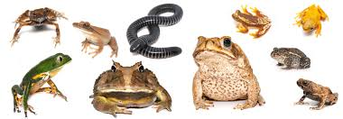

anfibios:
-
Cobra-cega Siphonops paulensis
Perereca / Hyla albopunctata
Perereca / Hyla sp. (afim de circumdata)
Perereca-de-banheiro / Scinax fuscovaria
Perereca-do-inverno / Hyla hiemalis
Pingo-de-ouro / Bufo brachyurus
Rã Leptodactylus / furnarius
Rã Leptodactylus / labirinthicus
Rã Leptodactylus / notoaktites
Rã Leptodactylus / pentadactylus
Rã Physalaemus / centralis
Rã Physalaemus / fuscomaculatus
Rã-assobiadora / Leptodactylus fuscus
Rã-cachorro, foi-não-foi / Physalaemus cuvieri
Rã-d'água / Pseudis paradoxa
Rã-da-mata / Eleutherodactylus binotatus
Rã-das-cachoeiras / Hylodes cf. ornatus
Rã-estriada Leptodactylus / mystacinus
Rã-manteig / Leptodactylus cf. ocellatus
Rã-pimenta / Leptodactylus labyrinthicus
Rãzinha / Adenomera bokermanni
Rãzinha / Eleutherodactylus guentheri
Rãzinha / Pseudopaludicola cf. falcipes
Rãzinha / Pseudopaludicola saltica
Rãzinha-do-capim / Eleutherodactylus juipoca
Sapo / Bufo crucifer
Sapo / Elachistocleiscf.ovalis
Sapo cururu / Bufo ictericus
Sapo, cururu, sapo-boi / Bufo paracnemis
Sapo-canoeiro, cunauaru / Phrynohyas venulosa
Sapo-de-chifre, sapo-folha / Proceratophrys boiei
Sapo-ferreiro, sapo-martelo, sapo-gameleiro / Hyla faber
|